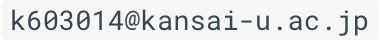

about
Sakai Soichi
- 情報学科で深層学習の研究をしている院生
- 子供向けのプログラミング＆電子工作教室を開いている
- 競技プログラミング好き
興味
- メディアアート (特に人工生命)
- ゲーミフィケーションによる教育 (組み合わせゲーム理論の教育への利用)
- コンピュータサイエンス全般 (特にアルゴリズムとデータ構造，機械学習，低レイヤ技術など)
制作物 & スキルセット
web
虹色オンライン算数教室
子供向け教材サイトの制作を企画，実装，販売．
記事の執筆は未来奈緒美先生に行ってもらった．
- wordpress, bootstrap4, html5, css3, javascript, php
研究
深層学習
CNNの学習過程の可視化(修士研究)
- ハイパーパラメータチューニング
- 深層学習の解釈性
- pytorch, CNN, VAE
画像認識
漫画画像中の顔の向き認識(卒業研究)
- Joint HOG特徴量, SVM
自然言語処理
ネットオークションの商品説明文から価格予測 mercari-price-suggestion-challenge
- TF-IDF, トピックモデル(LDA)
低レイヤ知識
Cコンパイラ制作
- c, x86, docker
CPUの制作
- CPUの創り方を参考に，汎用ロジックICで4bitCPU制作
電子工作教室
- Arduino
ソフトウェア制作
プロフィール交換アプリ HACK U 2017
4人チームで制作，フロントエンド全般と端末の衝突認識を担当
- Swift, Unity, C#
ハロウィン バーチャル仮装
kinectを使った仮装体験ができる作品．
梅田Loftで展示，二人チームで企画と実装に分かれ実装全般担当
- Processing, Kinect v2
アルゴリズムとデータ構造
- 学内で競技プログラミング勉強会を毎週木曜に主催，ICPCでNTTコミュニケーションズ賞受賞
- 競技プログラミングでAtcoder水色の能力
計算量に関する感覚が体に染みついており、複雑な処理でも苦もなく実装出来る 深さ優先探索や幅優先探索、順列の全列挙やパターンの全列挙などができる。そこから動的計画法やメモ化再帰などの計算量改善につなげることも多少出来る。 貪欲・DP・しゃくとり法・二分探索などの計算量を改善するテクニックをある程度使い分けることが出来る。 累積和やUnionFind(競プロ外ではDisjoint Set)などのデータ構造を使いこなすことが出来る。 ダイクストラ法やワーシャルフロイド法、クラスカル法などの、基本的なグラフアルゴリズムが扱える。木構造やグラフ構造に対して適切に処理を行うことが出来る。 一定以上の数学に関する素養がある。素数などの性質や、それを利用した素数判定や列挙、約数の列挙等、最小公倍数や最大公約数、組み合わせの計算など、競プロにありがちな典型数学問題に対処できる。
直大氏のブログより引用
趣味
作曲
- Ableton(DTMソフト), アナログシンセ, ジャズ理論, ピアノ
連絡先
